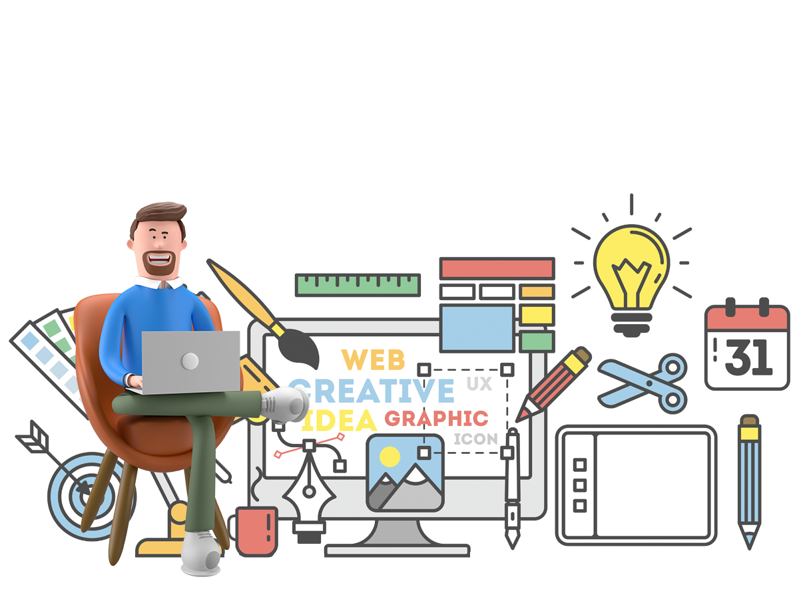

Y2K (also known as Kaybug or Cybercore) is an aesthetic that was prevalent in popular culture from roughly 1997 to 2004, succeeding the Memphis Design and Grunge eras and overlapping with the McBling, UrBling, Surf Crush, and 2K1 aesthetics.
2023 WEB TREND
